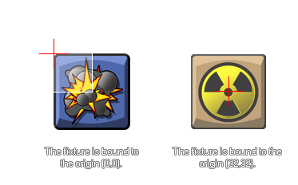

physics_fixture_bind(fixture, target)
| Argumento | Descripción |
|---|---|
| fixture | el accesorio que se va a atar |
| target | la instancia de destino que va a recibir el dispositivo (puede ser un identificador de instancia, un identificador de objeto, otro o todo ) |
Devoluciones: Real
Una vez que hemos definido nuestro accesorio, debe estar vinculado a una instancia. Esto significa que sus propiedades se transfieren a la instancia seleccionada, no a la instalación propiamente dicha, por lo que una instalación se puede vincular a varias instancias si todas tienen las mismas propiedades. Puede especificar un índice de objeto para el objetivo y todas las instancias presentes en la sala en ese momento recibirán las propiedades de los dispositivos (pero no las instancias nuevas del objeto creado más adelante), o puede usar las palabras clave especiales, otra y todas. Incluso puede especificar un objeto primario y todas las instancias secundarias con ese padre también recibirán el accesorio. Una vez que el dispositivo se haya unido a todas las instancias que necesita, se puede eliminar si ya no es necesario y las instancias con esas propiedades de accesorios no se verán afectadas y se mantendrán esas propiedades.
El accesorio se vinculará a la instancia con el centro de masa colocado en el origen de la instancia, y los dispositivos de polígono se unirán en función de la posición de los puntos relativos al origen. Si necesita que su dispositivo esté unido a un punto que no sea el origen, entonces debe usar physics_fixture_bind_ext.  La función también devolverá un valor único "id" para el accesorio unido (no el dispositivo en sí mismo) que luego se puede utilizar para eliminar ( "no-bind") las propiedades de la física de la instancia utilizando la función de physics_remove_fixture. Esto le permite agregar y eliminar propiedades físicas de una instancia sin destruir y volver a crear objetos.
Nota: los dispositivos se deben eliminar cuando ya no se necesiten, ya que no hacerlo puede provocar una pérdida de memoria que se ralentizará y, finalmente, bloqueará el juego.
var fix, inst;
fix = physics_fixture_create();
physics_fixture_set_circle_shape(fix, 16);
physics_fixture_set_density(fix, 1.0);
inst = instance_create_layer(x, y, "Instances",
genericBodyObject);
my_fix = physics_fixture_bind(fix, inst);
physics_fixture_delete(fix);
El código anterior creará un accesorio y asignará su índice a la variable "arreglar". A continuación, define la forma y la densidad del dispositivo antes de vincularlo a la instancia que se creó con el índice para el dispositivo vinculado almacenado en la variable "my_fix". Finalmente, el accesorio se elimina para evitar fugas de memoria ya que ya no es necesario.